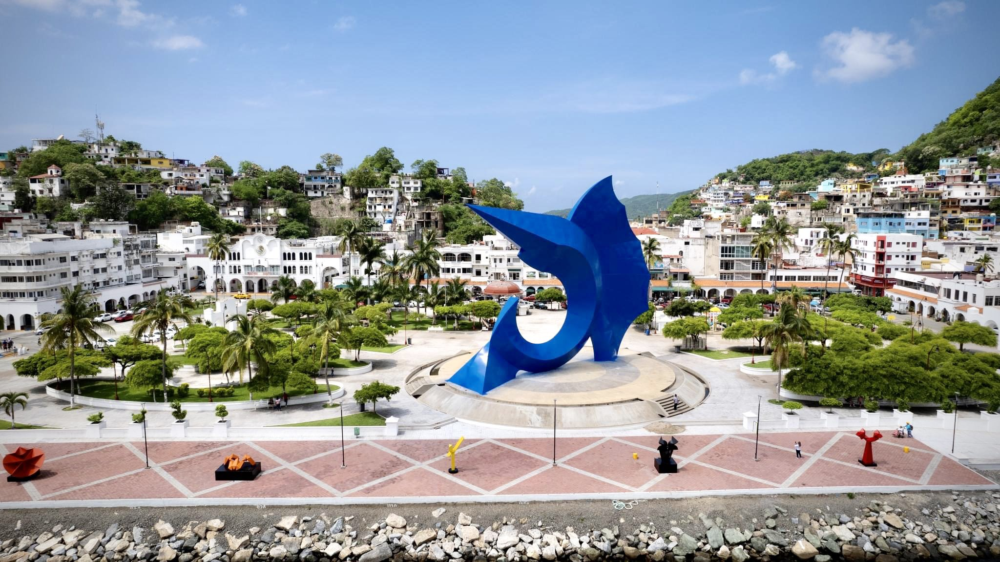
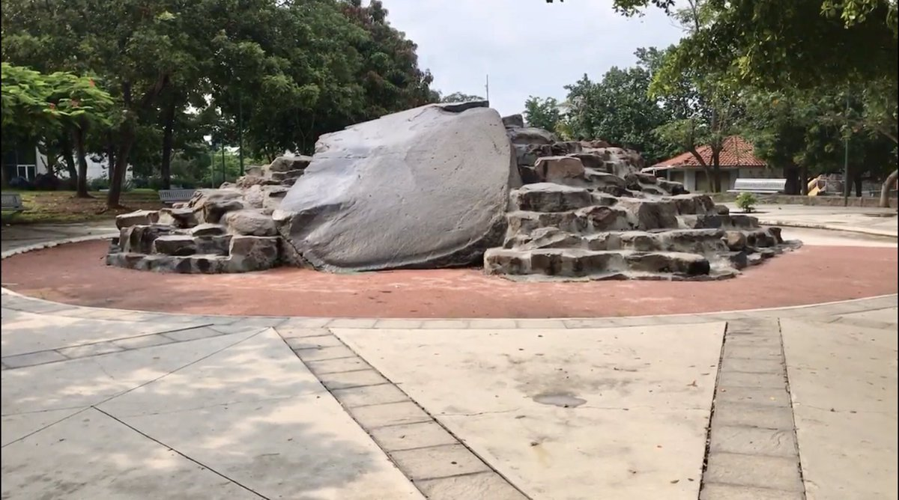
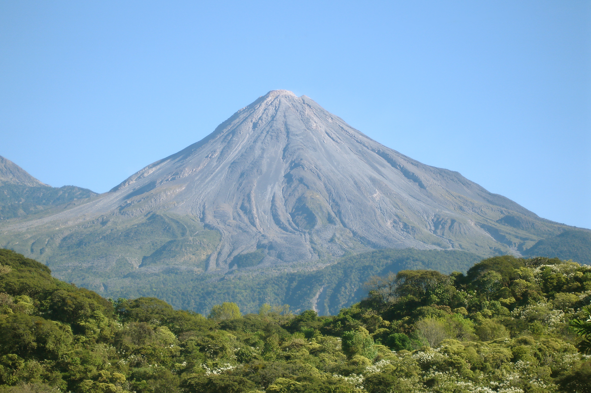
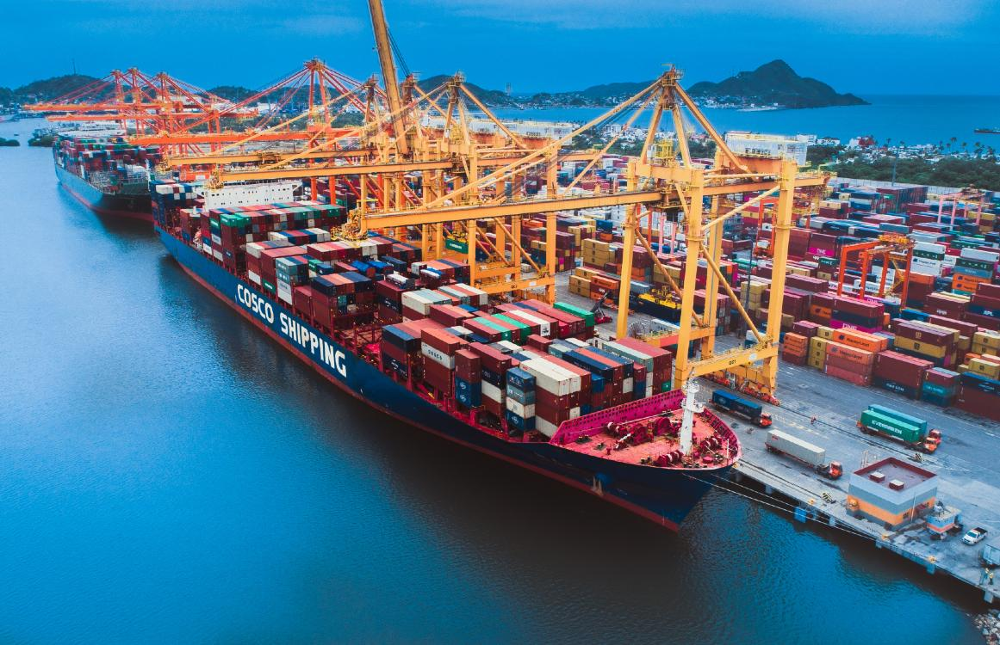
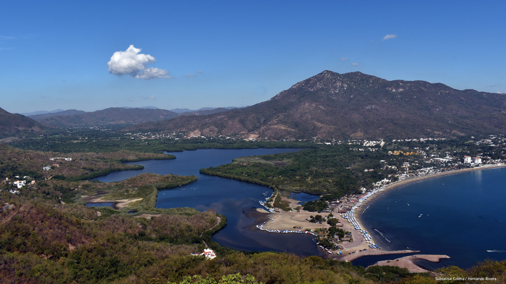

Landmarks & Places
Some places in Manzanillo and Colima show the area’s history, culture, ocean life, and natural beauty.


Pez Vela
The Pez Vela monument, designed by Enrique Carbajal, is one of Manzanillo’s most recognizable symbols. Located on the waterfront, it honors the city’s fishing tradition and its reputation as the sailfish capital of the world.

La Piedra Lisa
La Piedra Lisa is a historic landmark in Colima known for its large volcanic stone. Local tradition says that anyone who slides down it will one day return to Colima.

Volcán de Colima
Volcán de Colima, also called Volcán de Fuego, is one of the most active volcanoes in Mexico and a powerful natural symbol of the region.

Puerto de Manzanillo
Port of Manzanillo is Mexico’s largest Pacific cargo port and an important gateway for international trade, connecting the region to global commerce.

Playa La Boquita
Playa La Boquita is known for its calm shallow waters where the sea meets the lagoon, creating one of the area’s most distinctive coastal landscapes.